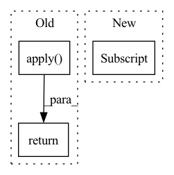

Pattern ID :2413
Before Change
norm_w=None,
norm_b=None,
alibi=None):
output = DeepSpeedSelfAttentionFunction.apply(
input,
input_mask,
head_mask,
layer_past,
get_present,
encoder_hidden_states,
encoder_attention_mask,
output_attentions,
norm_w,
norm_b,
self.config,
self.attn_qkvw,
self.attn_qkvb,
self.num_attention_heads_per_partition,
self.norm_factor,
self.hidden_size_per_partition,
self.attn_ow,
self.attn_ob,
self.mp_group,
self.q_scales,
self.q_groups,
self.merge_count,
self.qkv_merging,
self.score_context_func,
alibi)
return output
After Change
output = self.vector_matmul_func(input=context_layer, weight=self.attn_ow)
inp_norm = qkv_out[-1]
if self.config.mlp_after_attn and self.mp_group is not None and dist.get_world_size(
group=self.mp_group) > 1:
dist.all_reduce(output, group=self.mp_group)In pattern: SUPERPATTERN
Frequency: 3
Non-data size: 3
Instances Fragment ID: 14544872
Project Name: microsoft/deepspeed
Commit Name: bb68c526ad2c267dfb235db9c0d0fb1413d19a34
Time: 2022-12-22
Author: jerasley@microsoft.com
File Name: deepspeed/ops/transformer/inference/ds_attention.py
M Class Name: DeepSpeedSelfAttention
N Class Name: DeepSpeedSelfAttention
M Method Name: forward(12)
N Method Name: forward(12)
M Parent Class: nn.Module
N Parent Class: nn.Module
M File Name: deepspeed/ops/transformer/inference/ds_attention.py
N File Name: deepspeed/ops/transformer/inference/ds_attention.py
M Start Line: 458
M End Line: 485
N Start Line: 120
N End Line: 151
Before Change
self.static_weight = torch.cat( (bup,bdown),dim=0)
def forward(self,input):
return JastrowFunction.apply( input, self.weight, self.static_weight)
class JastrowFunction(torch.autograd.Function):
@staticmethodAfter Change
factors_updown = factors[:,:nup,nup:]
// electron pairs up up
factors_upup = factors_[:,:nup,:nup]
factors_upup = factors_upup[:,torch.tril(torch.ones(nup,nup))==0]
// electron pairs down,down
factors_downdown = factors_[:,nup:,nup:] Fragment ID: 14544869
Project Name: nlesc-jcer/qmctorch
Commit Name: 0175b9c86ca7dcb14e33c7ba4af8bbe1232c8790
Time: 2019-06-25
Author: nicolas.gm.renaud@gmail.com
File Name: pyCHAMP/wavefunction/wave_modules.py
M Class Name: TwoBodyJastrowFactor
N Class Name: TwoBodyJastrowFactor
M Method Name: forward(2)
N Method Name: forward(2)
M Parent Class: nn.Module
N Parent Class: nn.Module
M File Name: pyCHAMP/wavefunction/wave_modules.py
N File Name: pyCHAMP/wavefunction/wave_modules.py
M Start Line: 63
M End Line: 63
N Start Line: 97
N End Line: 110
Before Change
self.blocks = nn.ModuleList([ReversibleBlock(f=f, g=g) for f, g in blocks])
def forward(self, x):
return _ReversibleFunction.apply( x, self.blocks)
After Change
if self.layer_dropout > 0:
to_drop = torch.empty(len(self.blocks)).uniform_(0, 1) < self.layer_dropout
blocks = [block for block, drop in zip(self.blocks, to_drop) if not drop]
blocks = self.blocks[:1] if len(blocks) == 0 else blocks
return _ReversibleFunction.apply(x, blocks)
Fragment ID: 14544871
Project Name: lucidrains/reformer-pytorch
Commit Name: f989c1483f6f3d108722cfc1070933b6bee9a274
Time: 2020-02-23
Author: lucidrains@gmail.com
File Name: reformer_pytorch/reversible.py
M Class Name: ReversibleSequence
N Class Name: ReversibleSequence
M Method Name: forward(2)
N Method Name: forward(2)
M Parent Class: nn.Module
N Parent Class: nn.Module
M File Name: reformer_pytorch/reversible.py
N File Name: reformer_pytorch/reversible.py
M Start Line: 118
M End Line: 118
N Start Line: 118
N End Line: 125